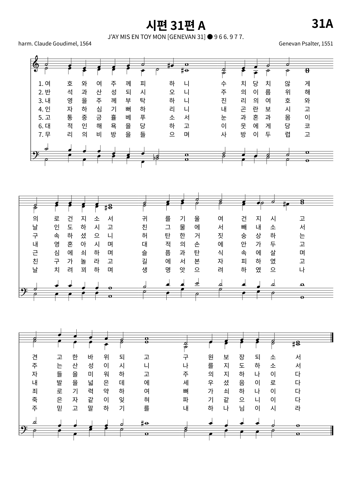

Psalm 31A
J’AY MIS EN TOY MON [GENEVAN 31] · 9 6 6. 9 7 7.
English title: In Thee, O LORD, I’ve Taken Refuge
Tune: Genevan Psalter, 1551 · Harmony: Claude Goudimel, 1564 · Lyrics: Korean adaptation of Psalm 31 from the Korean Revised Version (AI draft adaptation · not yet theologically reviewed) · 7 stanzas
Psalm 31 is divided into 2 tunes: A B · This tune contains stanzas 1–7 of the Psalm 31 lyrics.
Score PDF MusicXML (for printing) MusicXML (for accompaniment, with prelude and repeats) Read Psalm 31 (Korean Revised Version)
Score
← Psalm 30 ListAccompaniment (in preparation)Psalm 31B →
Lyrics (Korean)
Stanza 1
여호와여 주께 피하니
수치 당치 않게
의로 건지소서
귀를 기울여 건지시고
견고한 바위 되고
구원 보장 되소서
여호와여 주께 피하니
수치 당치 않게
의로 건지소서
귀를 기울여 건지시고
견고한 바위 되고
구원 보장 되소서
Stanza 2
반석과 산성 되시오니
주의 이름 위해
날 인도하시고
친 그물에서 빼내소서
주는 산성이시니
나를 지도하소서
반석과 산성 되시오니
주의 이름 위해
날 인도하시고
친 그물에서 빼내소서
주는 산성이시니
나를 지도하소서
Stanza 3
내 영을 주께 부탁하니
진리의 여호와
구속하셨으니
허탄한 거짓 숭상하는
자들을 미워하고
주 의지하나이다
내 영을 주께 부탁하니
진리의 여호와
구속하셨으니
허탄한 거짓 숭상하는
자들을 미워하고
주 의지하나이다
Stanza 4
인자하심 기뻐하리니
내 곤란 보시고
내 영혼 아시며
대적의 손에 안 가두고
내 발을 넓은 데에
세우셨음이로다
인자하심 기뻐하리니
내 곤란 보시고
내 영혼 아시며
대적의 손에 안 가두고
내 발을 넓은 데에
세우셨음이로다
Stanza 5
고통 중 긍휼 베푸소서
눈과 혼과 몸이
근심에 쇠하며
슬픔과 탄식 속에 살며
죄로 기력 약하여
뼈가 쇠하나이다
고통 중 긍휼 베푸소서
눈과 혼과 몸이
근심에 쇠하며
슬픔과 탄식 속에 살며
죄로 기력 약하여
뼈가 쇠하나이다
Stanza 6
대적 인해 욕을 당하고
이웃에게 당코
친구가 놀라고
길에서 본 자 피하였고
죽은 자 같이 잊혀
파기 같으니이다
대적 인해 욕을 당하고
이웃에게 당코
친구가 놀라고
길에서 본 자 피하였고
죽은 자 같이 잊혀
파기 같으니이다
Stanza 7
무리의 비방을 들으며
사방이 두렵고
날 치려 꾀하며
생명 앗으려 하였으나
주 믿고 말하기를
내 하나님이시라
무리의 비방을 들으며
사방이 두렵고
날 치려 꾀하며
생명 앗으려 하였으나
주 믿고 말하기를
내 하나님이시라